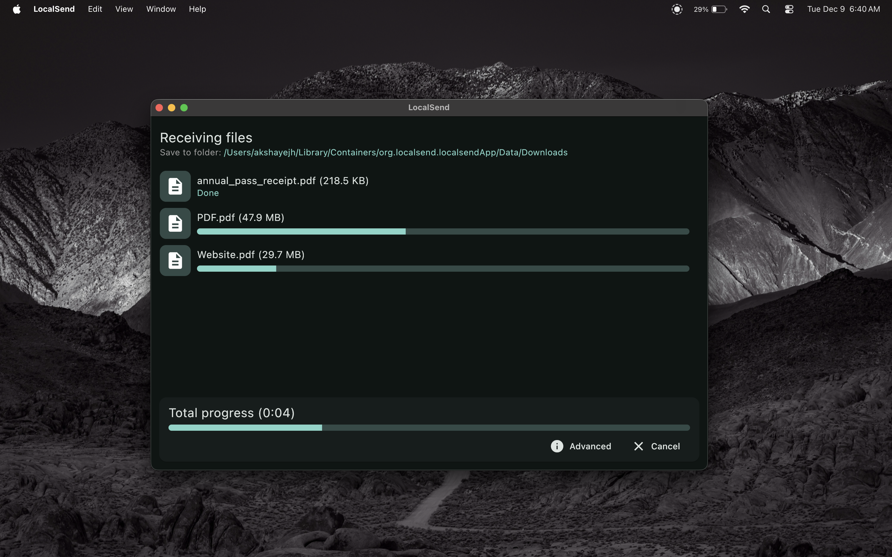
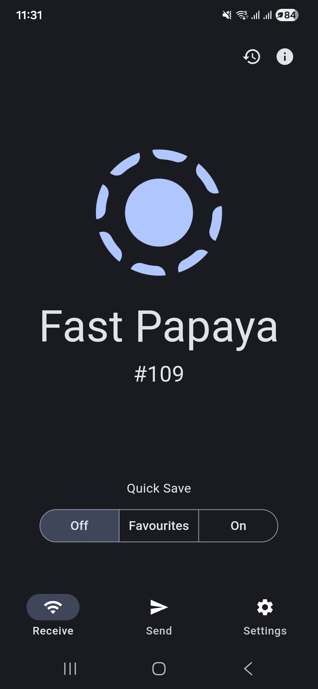

用了 LocalSend 大半年才挖到的 5 个隐藏功能——原来局域网传文件还能这么玩
收藏夹绕过 VPN 干扰、手动 IP 直连、命令行批量发送、网络接口白名单过滤……这些藏得很深的小开关，才是把 LocalSend 用透的关键。
你以为 LocalSend官网 上主打宣传的就是个 AirDrop 替代品，打开、选人、点发送、收工？我之前也是这么想的——直到某天开着 VPN 给同事传 PPT 死活搜不到设备，关了 VPN 立刻恢复，这才逼得我翻遍设置把它摸了个底朝天。
结果发现这款工具藏得真深。很多人用了几个月都没碰过的选项，恰恰是那些真正能在关键时刻救场的功能。今天挑五个我觉得最实用的讲一讲。

一、收藏夹直达：绕过 VPN 和多播失效的发现机制
这是我挖出来最惊喜的一个。
LocalSend 的设备发现靠的是多播广播——每个设备在局域网里"喊一声我在这"，其他设备听到就把你列出来。问题来了：VPN 一开，系统默认把所有流量塞进加密隧道，多播包直接被吞掉，同网段设备根本收不到你的公告。关 VPN ？传完再连回去？可以，但天天这么折腾人。
你可能不知道，LocalSend 有一个"收藏夹"机制，对收藏的设备会跳过多播发现，直接向已知地址探测。这意味着什么？只要你把常用设备加进收藏夹，哪怕 VPN 开着，只要手动 IP 能 ping 通，它就能连上。
入口藏在设备列表里：右键或长按某个设备，选"添加到收藏夹"就行。加完之后，这台设备的图标旁边会多一个小星星。我现在把家里和公司常传的几台设备全加了星，VPN 开着也丝毫不影响，同事还以为我开了什么黑科技。
二、手动输入 IP 直连：发现失效时的救命绝招
如果收藏夹也救不了——比如对方换了网段、或者公司网络策略把多播掐得死死的——还有一招绝的：直接输入对方的局域网 IP。
在 LocalSend 的发送页，大多数平台版本都有一个很不起眼的"手动连接"按钮，藏在设备列表底部或右上角菜单里。点开之后就是一个 IP 地址输入框，敲完对方的 192.168.x.x 地址，直接发起发送请求。
我有次在酒店里跟朋友传照片，酒店 WiFi 把多播功能屏蔽了，设备列表刷新半天啥也没有。就是靠这招，互相查了下对方的局域网 IP，直接连得上。这个功能的好处是不依赖任何发现机制——只要两台设备在同一个二层网络，IP 对了就能通。
三、网络接口白名单/黑名单：多网卡设备的精细控制
这个功能的存在本身就让我觉得 LocalSend 的开发者想得特别细。
你是不是也遇到过这种情况：电脑同时连着有线网卡、无线网卡，还开着个安卓模拟器或者 Docker，设备列表里只冒出一部分设备，或者干脆啥也搜不到？原因就是那些虚拟网卡和网桥抢了路由，发往真正局域网的数据包走错了出口。
解决办法藏在：设置 → 高级设置 → 网络接口。这里可以按白名单或黑名单模式，指定让 LocalSend 只在哪几块网卡上监听和广播。比如我自己的电脑就把有线网卡设为白名单，其他所有接口全排除，设备发现立刻干净利落，不再有那些不该出现的虚拟设备干扰。
这个选项 LocalSend文档 里提过，但应用内埋得确实深——没在网络环境里踩过坑的人大概率不会注意到它。

四、命令行批量发送：CLI 模式很多人根本不知道
LocalSend 有个 localsend-cli 命令行版本，适合脚本调用和自动化场景，但就算你不写脚本，它也有很实在的用法。
比如你有一个大文件夹要发给组里所有人，图形界面得一个个拖文件，命令行一行搞定：
localsend-cli send ./项目备份甚至可以指定接收方设备名、等待确认超时时间等参数。对于搞技术的人来说，把这个命令塞进 Git hook 或者构建脚本里，代码写完自动发给测试机，简直不要太爽。
CLI 版本的分发渠道跟图形版一样，Windows 上有独立的 exe，macOS 和 Linux 也有各自的包管理器——想省心直接从官方下载拿对应平台的安装包就行。它和图形版用的是同一个底层协议，互通无差别。
五、接收弹窗的逐项跳过：不想收的文件不用全拒
最后一个，藏在接收端弹窗里，非常容易被忽略。
对方给你发了一个 50 个文件的文件夹，你只想收其中 5 个——怎么办？之前我傻傻地全收了再手动删。后来发现接收弹窗里，每一个文件前面都有一个独立的勾选框，默认全选，你把不想收的取消勾选就行，不用拒绝整个请求。
对于几百个文件的大目录，这个功能能省你好多时间。而且 LocalSend 重名文件不会覆盖已有文件，而是按"文件名（1）"的规则另起名，所以就算全收了也不会弄坏你的原始文件——只是占点空间而已。
一个要提醒你的坑
说到收藏夹功能，有个副作用得提一下：收藏的设备如果换了 IP 地址（比如对方手机切换了网络），LocalSend 不会自动更新收藏记录里的地址，收藏连接就会失效。这时候得把那个设备从收藏里删掉重新加一次。不是什么大问题，但第一次遇到的时候我以为收藏夹失效了，查了半天。
另外，CLI 模式目前还不支持断点续传——局域网稳定性一般的话，传几个 GB 的大目录之前最好先确认网络不会断，中断重来的成本挺高。
LocalSend 之所以能这么火，开源免费、无广告无跟踪是主要原因，但这些藏得很深的细节功能，才是让它从"能传文件"变成"传得舒服"的关键。很多人说好用说的是界面和流程，真正把它用透的人，是那些把设置翻到底、把角落的小开关都试了一遍的折腾党。
如果你也在用 LocalSend，下次遇到搜不到设备、传大文件卡顿这种问题，别急着换工具——说不定答案就藏在某个你没点开过的子菜单里。